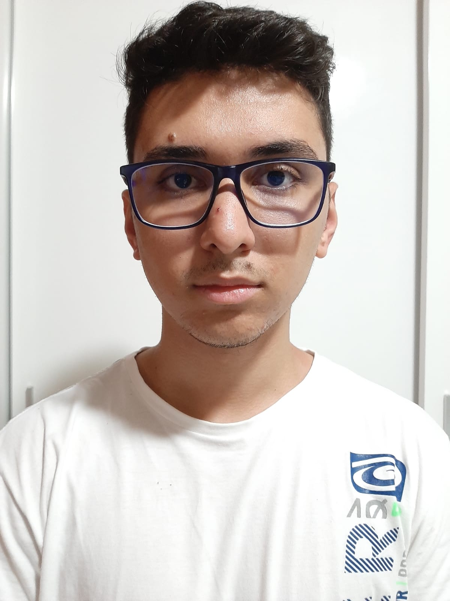

Desenvolvedor Web & Estudante de DSM
Veja meus projetosAtualmente faço curso de DSM (Desenvolvimento de Software Multiplataforma) na Fatec/Jacareí e gosto de criar soluções simples, funcionais e bonitas. Tento manter o foco em acessibilidade, boas práticas e experiência do usuário.
Desde pequeno sempre fui curioso por tecnologia, o que me levou a escolher essa área. Durante a faculdade, venho me desenvolvendo em projetos práticos, estudando linguagens como JavaScript, TypeScript e frameworks como React, NodeJS entre outros.
Sou mais fã da parte de Back-End na programação, pois sempre gostei de lógica e matemática quando era mais novo.
Estou em constante aprendizado e procuro sempre aplicar o que aprendo em projetos pessoais e acadêmicos.
Aplicação feita em React/ReactNative + PostgreSQL + Prisma + NodeJS + TypeScript + Python + C++
Ver projetoAplicação feita em React/ReactNative + PostgreSQL + NodeJS + TypeScript + C++
Ver projetoAplicação feita em React + MongoDB + NodeJS + TypeScript
Ver projetoAplicação feita em React + PostgreSQL + TypeScript
Ver projetoAinda não possuo projetos pessoais publicados, mas em breve adicionarei novos projetos aqui.
Aqui estão algumas atividades práticas desenvolvidas durante a faculdade:
Email: vitorczayas@gmail.com